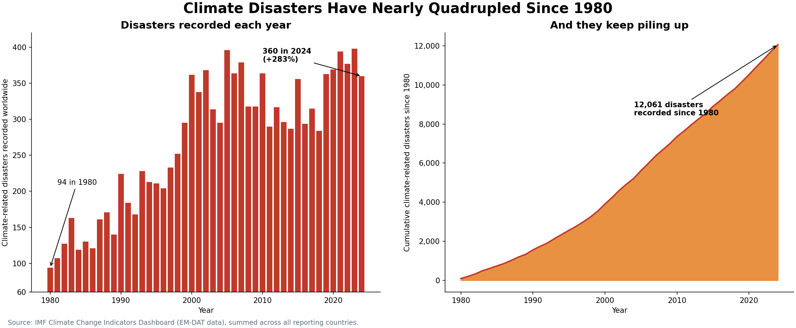
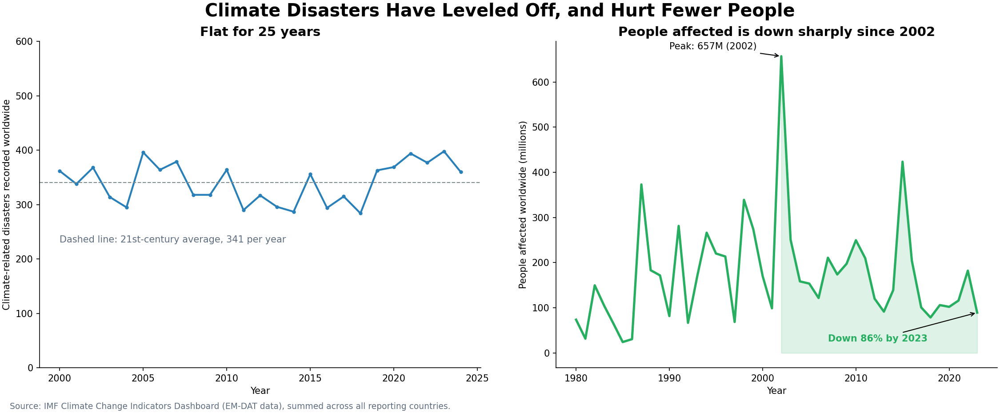

Proposition: Climate-related disasters are becoming dramatically more frequent.
Each design decision is scored from −2 (fully deceptive) to +2 (fully earnest).
FOR the Proposition

Design decisions and rationale
-
Truncated y-axis (score: −1.5)
The number of disasters went from 94 to 360 a year, a 283% increase. That's a real increase.
Starting at 60 instead of 0 cuts off the bottom 60 units of every bar, so the same increase visually reads as a much steeper jump: readers judge bar height ratios, not axis labels. Considered a 0-based axis, but it undercut the dramatic framing, which is the point: this is a persuasion choice, not a neutral one. Honest alternative: 0-based axis with the 283% annotated directly, or a log scale if relative growth is the real point.
-
Cumulative running total (score: −1)
This chart adds up every disaster since 1980, reaching 12,061. The issue is that a running total naturally keeps increasing as new disasters occur. It doesn't show whether the number of disasters in each year is actually increasing, staying the same, or falling.
Pairs a big, always-climbing number (12,061) next to the bar chart to imply unstoppable momentum, but a cumulative sum can’t decrease regardless of whether yearly counts rise, flatten, or fall, so it hides the frequency trend. Considered a 5-year rolling average instead, which shows the real trend without manufacturing false momentum.
-
Real IMF and EM-DAT data, checked for double-counting (score: +1.5)
The numbers come from IMF and EM-DAT data, so the figures themselves aren't made up. I also checked for double-counting from regional totals like Europe, and their contribution was under 1% of the total. That doesn't explain the trend.
Sourced data borrows institutional credibility, and ruling out regional double-counting (<1%) closes an easy objection in advance. But source credibility says nothing about framing credibility: real numbers can still be displayed deceptively, which is the core tension here.
-
Headline and panel titles (score: −0.5)
“Nearly Quadrupled” uses a specific, checkable multiplier that feels rigorous while still being the most dramatic accurate phrasing of 283%. “And they keep piling up” primes readers to see the cumulative chart as acceleration rather than a simple running sum.
AGAINST the Proposition

Design decisions and rationale
-
Selective time window (2000 to 2024) (score: −1)
This chart only covers 2000 to 2024, leaving out the rise during the 1980s and 1990s. The numbers, 362 versus 360, make the trend look flat, but that depends on the time period being shown.
Cutting 1980-1999 removes the steepest rise, so 362 vs. 360 looks flat: not altered data, just omitted years. Mirror of the FOR axis trick, compressing time instead of scale. Honest alternative: show the full 1980-2024 range, or disclose why a shorter window was chosen.
-
Tall y-axis (0 to 600) (score: −0.5)
The y-axis also goes up to 600, making the year-to-year changes harder to notice.
Stretching range to 600 when data sits around 300-400 flattens the visible slope, making real swings look like noise. Same manipulation as the FOR truncated axis, opposite direction. Considered tightening to the actual data range, but that would’ve undercut the flat story.
-
Switching the metric to people affected (score: −1)
This chart looks at people affected rather than the number of disasters. The figure peaked at 657 million in 2002 and dropped to around 89 million by 2023. Those numbers matter, but they answer a different question. Fewer people being affected doesn't necessarily mean fewer disasters are happening. The spike in people affected in 2002 also lines up with major droughts and floods in India and China that year.
The strongest trick here: not an axis manipulation but a question substitution. People affected depends on population density and infrastructure as much as disaster frequency, so it can drop while event counts rise. The 2002 spike (India/China droughts and floods) shows how volatile and non-equivalent this metric is. Honest alternative: show both metrics over the full 1980-2024 range and flag that they can move independently.
-
Headline and panel titles (score: −1)
“Leveled Off” implies a stopped rise that’s really just a chosen window. “Hurt Fewer People” smuggles the metric swap in as if it still answers the frequency question. “Flat for 25 years” is accurate for the window shown but hides that the window itself was cherry-picked.
Final Reflection
I'm leaning toward the FOR side, but I'm not completely convinced by it. Disaster counts have increased a lot since 1980, so there's a real trend here. But both sides present the data in ways that support their arguments. FOR makes the increase look more dramatic, while AGAINST focuses on years where the numbers barely change. I find AGAINST more misleading because leaving out the earlier rise gives a very different picture of the overall trend. Overall, I think the FOR side has the stronger argument because it captures the longer-term increase. But its charts make that increase look more dramatic than they need to. The cumulative total and truncated y-axis are the main issues.
What surprised me most was that every trick used real, correctly-sourced numbers: nothing was fabricated. That’s what made this hard: spotting a lie is easy, spotting a true number in a misleading frame is not, especially when the frame (axis range, time window, title) looks like an ordinary design choice.
I’d now define ethical visualization as one where every choice that could change the reader’s conclusion is either neutral or disclosed, so a skeptical reader could reconstruct the other side from the chart itself. The line between acceptable persuasion and misleading design is recoverability: a visible, labeled axis start is persuasive but honest; an unlabeled one relies on readers not checking. A metric swap is fine as a complementary view but misleading when presented as answering the same question without saying so. By that standard, FOR’s tricks are more defensible: they’re visible in the chart itself, while AGAINST’s central trick, the 2000 cutoff, is invisible unless you already know the full history.